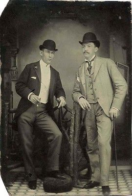
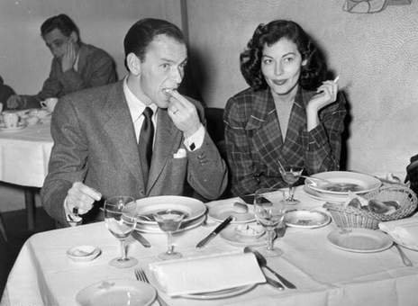
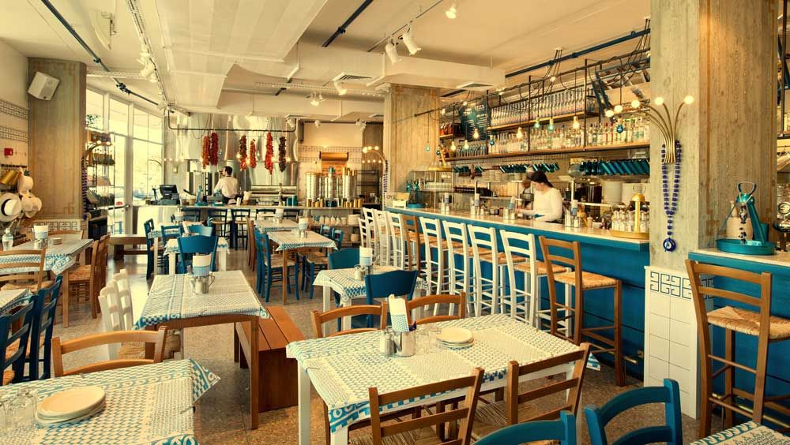

Restaurantul "Taverna Opa" este unul deosebit, prin bucatele speciale pe care le ofera si prin atmosfera care ne aminteste de frumoasa si insorita Grecie. Acest restaurant a fost construit in anii 30 de catre doi imigrantii greci pe nume Adonis si Athanasios Beziris. Acesti doi frati au fost printre primii care au reusit sa deschida un local cu specific greces, dorind prin acesta sa aduca ceva nou in bucataria diversa a New Yorkului.  Asezat in cartierul Brooklyn, in apropiere de "Brooklyn College", acesta era menit sa deserveasca in special numarul mare de greci, care emigrase aici in primele decenii ale secolului trecut. Cu timpul bucatele sale au starnit mult interes si printre ceilalti locuitori ai orasului, fiind atrasi de calitatea si autenticitatea produselor, cat si de noutatea acestora. In decursul vremii acesta a fost frecventat de multe personalitati, printre care Frank Sinatra, Harry S. Truman, Elvis Presley, Fred Mercury, Elizabeth Taylor si multi altii.  Toti prorietarii care au detinut si detin localul au fost si sunt mostenitori ai celor doi frati, acesta devenind o afacere a familiei Beziris. De asemeanea cu trecerea timpului au fost facute mai multe modificari, extinderi si renovari, ajungand ca astazi sa cuprinda 3 sali de mese,o sala de conferinta, un mini hotel si mai multe terenuri de sport. Datorita acetor schimbari au fost diversificate si serviciile pe care acesta le ofera, si anume organizarea de evenimente, serviciul de cathering, desfasurarea de activitati sportive si posobolitatea cazarii. Toate acestea fac din "Taverna Opa" un loc in care clientul poate gusta din mancarea autentica a Grecie si se poate bucura de o paleta larga de activitati. 
@TavernaOpa 2017.Toate drepturile rezervate | ANPC